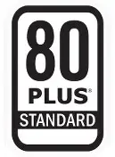
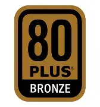
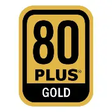
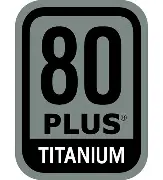

🔌 PSU - Power Supply Unit
The PSU converts AC power from your wall outlet into DC power that your computer components can use. A quality PSU is essential for system stability, component longevity, and safety. The PSU provides power to every component in your computer.
Wattage determines how much power the PSU can supply. Efficiency (rated by 80 PLUS) indicates how effectively it converts AC to DC power. Modular cables allow you to connect only the cables you need, improving airflow and cable management.
80 PLUS White
Efficiency: 80% at 20% and 100% load
80 PLUS White is the entry-level efficiency standard. These PSUs are affordable and suitable for basic systems, but are less efficient and generally lower quality than higher-rated units.

| Efficiency | 80% at 20% and 100% load |
|---|---|
| Typical Use | Entry-level systems, office PCs |
| Advantages | Affordable, basic reliability |
| Limitations | Lower efficiency, often non-modular |
80 PLUS Bronze
Efficiency: 82% at 20% load, 85% at 50% load, 82% at 100% load
80 PLUS Bronze is the most common efficiency standard for budget and mid-range builds. These PSUs offer good efficiency and reliability at an affordable price point.

| Efficiency | 82-85% |
|---|---|
| Typical Use | Budget gaming PCs, office systems |
| Advantages | Good value, reliable, widely available |
| Limitations | May be non-modular, basic cables |
80 PLUS Silver
Efficiency: 85% at 20% load, 88% at 50% load, 85% at 100% load
80 PLUS Silver offers a good balance between cost and efficiency. These PSUs are less common than Bronze and Gold, but provide solid performance for mid-range systems.
.webp)
| Efficiency | 85-88% |
|---|---|
| Typical Use | Mid-range gaming PCs |
| Advantages | Good efficiency, solid quality |
| Limitations | Less common, harder to find |
80 PLUS Gold
Efficiency: 87% at 20% load, 90% at 50% load, 87% at 100% load
80 PLUS Gold is the sweet spot for most enthusiasts. These PSUs offer excellent efficiency, quality components, and often come with modular cables. They're recommended for gaming PCs and workstations.

| Efficiency | 87-90% |
|---|---|
| Typical Use | Gaming PCs, workstations |
| Advantages | Excellent efficiency, quality components |
| Limitations | More expensive than Bronze |
80 PLUS Platinum
Efficiency: 90% at 20% load, 92% at 50% load, 89% at 100% load
80 PLUS Platinum PSUs offer exceptional efficiency and are built with high-quality components. They're ideal for high-end systems, power-hungry components, and users who want the best performance and reliability.
.webp)
| Efficiency | 89-92% |
|---|---|
| Typical Use | High-end gaming PCs, workstations |
| Advantages | Very efficient, high quality, quiet |
| Limitations | Expensive, often overkill for budget builds |
80 PLUS Titanium
Efficiency: 90% at 10% load, 94% at 20% load, 96% at 50% load, 91% at 100% load
80 PLUS Titanium is the highest efficiency rating available. These PSUs are the absolute best, with minimal power waste, exceptional build quality, and top-tier components. They're for enthusiasts who want the best of the best.

| Efficiency | 90-96% |
|---|---|
| Typical Use | Ultimate gaming PCs, servers, workstations |
| Advantages | Best efficiency, premium quality, silent |
| Limitations | Very expensive, overkill for most users |